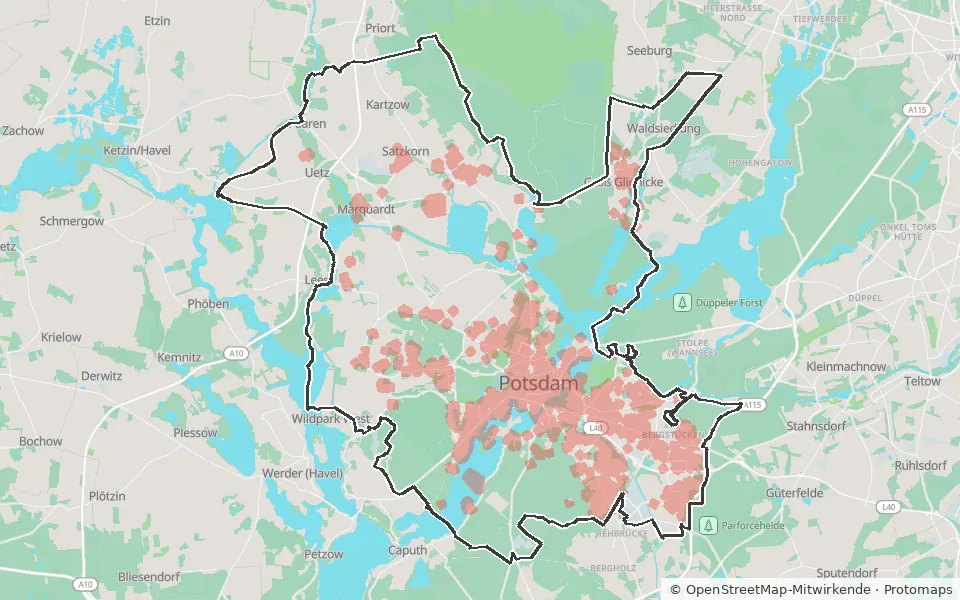
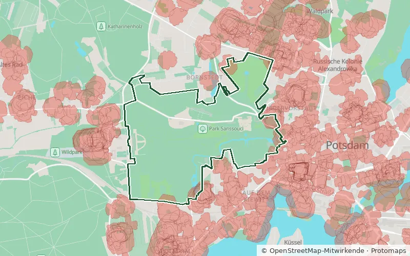
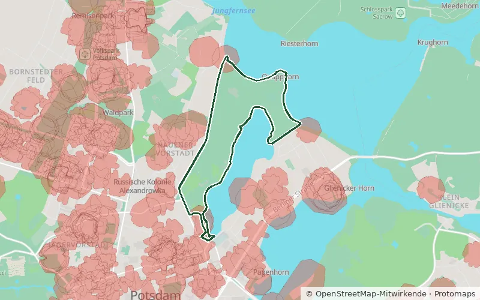
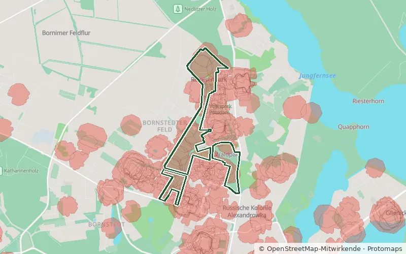
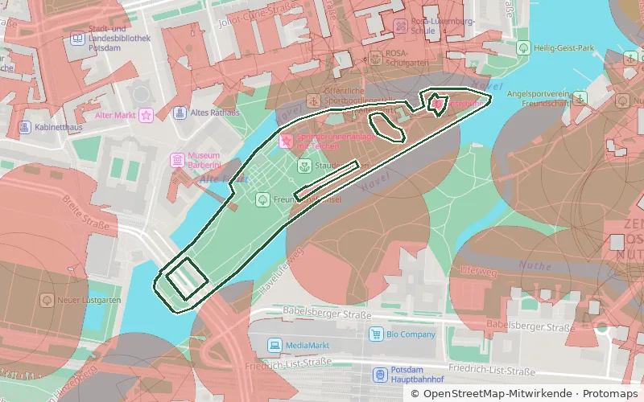
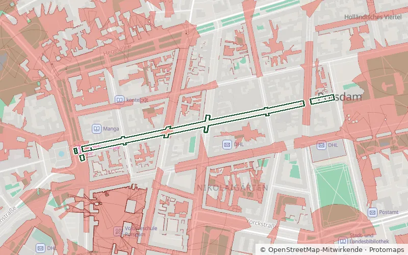
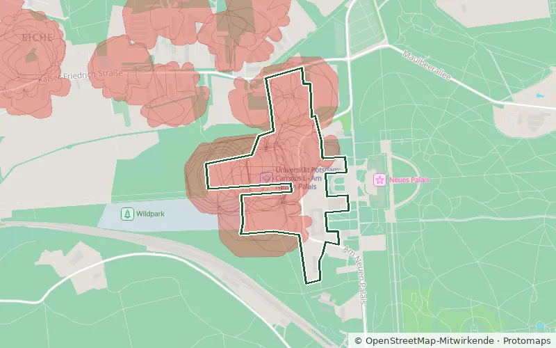

In Potsdam ist öffentliches Kiffen auf 19 km² verboten, das sind 10,0 % der Stadtfläche von 188 km². Grund sind 1 272 Einrichtungen wie Schulen und Spielplätze: In ihrer Sichtweite, bis 100 Meter vom Eingang und ohne Gebäude dazwischen, verbietet § 5 KCanG den Konsum. Dazu kommt die Fußgängerzone in der Brandenburger Straße von 7 bis 20 Uhr und überall die Gegenwart von Minderjährigen.
Fast ein Drittel der Stadt ist Wald (29 % der Stadtfläche), dazu kommen Seen und die großen Schlossparks, und dort liegt kaum eine Zone; ohne den Wald gerechnet sind es 12,2 %.

Woher die Zonen kommen
| Einrichtung | Anzahl | Zonenfläche |
|---|---|---|
| Schulen | 73 | 3,7 km² |
| Kitas und Kindergärten | 114 | 3,4 km² |
| Kindertagespflege | 12 | 0,3 km² |
| Spielplätze | 537 | 8,5 km² |
| Kinder- und Jugendeinrichtungen | 38 | 0,8 km² |
| Sportstätten | 498 | 9,4 km² |
Jede Art für sich gezählt, Überlappungen also mehrfach. Anbauvereinigungen nur, soweit in OpenStreetMap eingetragen.
Potsdam hat mehr Spielplätze (537) als Sportstätten (498); die größere Fläche haben trotzdem die Zonen um die Sportstätten. Auf ausgewiesenen Spielplätzen verbietet das Nichtraucherschutzgesetz des Landes außerdem das Rauchen von Tabak, also auch von Joints mit Tabak (BbgNiRSchG). Die Stadtordnung regelt Alkohol, Drogen und Rauchen nicht (Stadtordnung).
Sanssouci und die Schlossparks
Vom Park Sanssouci liegen nur 4 % in einer Zone: Im Park liegen fünf Sportanlagen, Spielplätze und Kitas nur am Rand. Im Neuen Garten sind es 3 %, im Park Babelsberg 9 %. Die Parkordnung der Schlösserstiftung verbietet dort Feuer, Grillen, Musik und das Liegen außerhalb der freigegebenen Wiesen; zu Rauchen und Cannabis sagt sie nichts. Die Parks sind von 8 Uhr bis zur Dämmerung offen (Stiftungsanlagenverordnung).


Ganz anders der Volkspark im Bornstedter Feld: Dort liegen 78 % in einer Zone, um neun Spielplätze und 18 Sportanlagen im Park.

Von der Freundschaftsinsel liegen 43 % in einer Zone, vom Ufer des Heiligen Sees 10 %. Auf einem 100 Meter breiten Streifen Land an den Havelarmen in der Innenstadt sind es 41 % an der Alten Fahrt und 54 % an der Neuen Fahrt.

Innenstadt
Fußgängerzone ist die Brandenburger Straße vom Brandenburger Tor bis zur Friedrich-Ebert-Straße; Lindenstraße, Dortustraße und die Gassen des Holländischen Viertels sind es nach dem Innenstadtverkehrskonzept nicht (Stadt Potsdam, 2017). Den kurzen Abschnitt östlich davon bis Am Bassin hat die Stadt 2026 zur Fußgängerzone umgebaut (Entwicklungsstadt, März 2026). Dort gilt von 7 bis 20 Uhr Konsumverbot; blau sind die Fußgängerbereiche aus OpenStreetMap.
Von der Brandenburger Straße liegen außerdem 11 % in einer Sichtweiten-Zone, vom Luisenplatz 29 %. Der Bassinplatz liegt zu 74 % in einer Zone, der Lustgarten am Landtag ganz (100 %).

Universität und Stadion
Hochschulen sind nach § 5 KCanG keine Verbotsorte. Vom Campus Am Neuen Palais der Universität liegen 62 % in einer Zone, um 23 Sportanlagen, fünf Spielplätze und eine Kita; die Hausordnung wiederholt für diese Flächen nur das Gesetz (Hausordnung).

Die Stadionordnung des Karl-Liebknecht-Stadions von 2012 nennt Cannabis nicht; wer erkennbar unter Drogen steht und ein Risiko ist, kann abgewiesen werden (Stadionordnung).
Was sonst noch gilt
In Brandenburg ahndet nicht die Stadt Verstöße gegen die Konsumverbote, sondern das Landesamt für Arbeitsschutz, Verbraucherschutz und Gesundheit (Zuständigkeitsverordnung). Ein Verstoß gegen § 5 Abs. 2 kostet 50 bis 500 Euro, in Gegenwart von Minderjährigen 300 bis 1.000 Euro (Bußgeldkatalog Brandenburg). Eigene Verbotszonen für Cannabis hat Potsdam nicht (Stand 27. November 2026).
Häufige Fragen
Wo darf man in Potsdam kiffen?
Nach § 5 KCanG außerhalb der roten Flächen, etwa in großen Teilen des Parks Sanssouci (4 % in einer Zone), solange er offen ist. Tagsüber nicht in der Brandenburger Straße, nie in Gegenwart von Minderjährigen und nicht gegen ein Hausrecht. Weiß heißt nicht sicher erlaubt: Hecken, Bäume und fehlende Einrichtungen kennt die Karte nicht.
Wie genau ist das?
Täglich aus OpenStreetMap gerechnet, mit Gebäuden als Sichthindernis; die Zahlen hier sind vom 27. November 2026. Eine Orientierungshilfe, keine Rechtsauskunft (wie gerechnet wird).
Fehlt eine Einrichtung? Korrekturen in OpenStreetMap stehen am Tag darauf auf der Karte; bitte nur eintragen, was es vor Ort gibt.